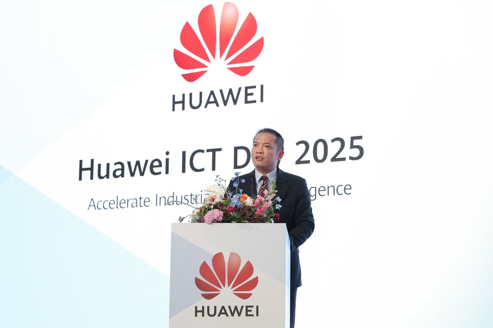
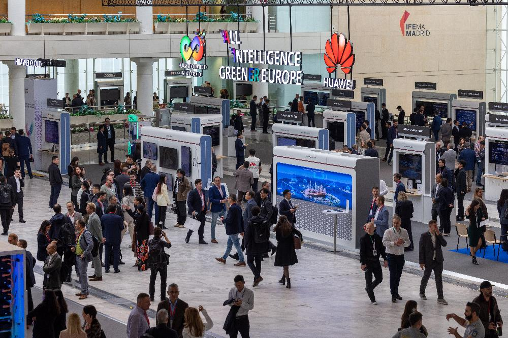
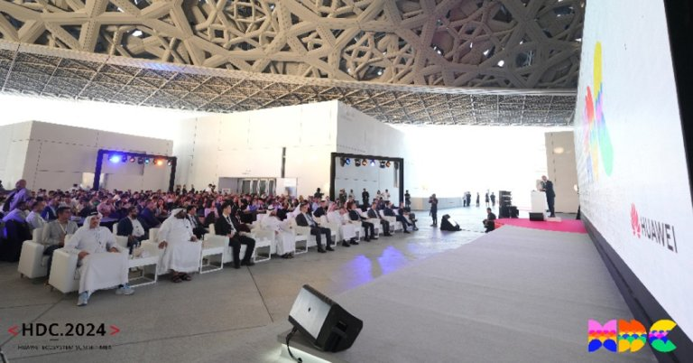
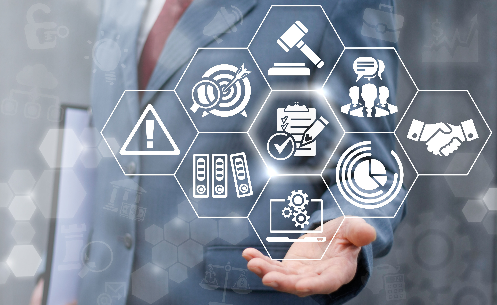

<html>
<title>Huawei Tanıtım</title>
<link rel="stylesheet" type="text/css" href="main.css">
<meta charset="UTF-8">
</html>


<body>


<div class="navigasyon_bar">

<a href="index.html" > 
	</img>
	</a>

	<a href="huawei_hakkında/huawei_hakkinda.html"> <div class="ic_div"> Huawei Hakkında </div> </a>
	<a href="urunler/urunler.html"> <div class="ic_div"> Ürünler </div> </a>

	<a href="sürdürülebilirlik/sürdürülebilirlik.html"> <div class="ic_div"> Sürdürülebilirlik </div> </a>

	<a href="eğitim/egitim.html"> <div class="ic_div"> Eğitim </div> </a>
	<a href="haberler/haberler.html"> <div class="ic_div"> Haberler </div> </a>

</div>


<!--------------------------------------------------------->


<section class="hero hero-7">
  <video autoplay muted loop playsinline>
    <source src="videolar/banner.mp4" type="video/mp4">
  </video>
</section>


<div class="sidebar" tabindex="0">
  <div class="side_liste">

    <div class="side_sol_liste ">
      <ul>
       <a href="https://www.huawei.com/en/events/huaweiconnect?utm_source=chatgpt.com"> <li> 
 18.09.2025</li></a>
        <a href="https://www.huawei.com/tr/news/2025/huawei-ict-day-2025te-endustriyel-donusumun-yol-haritasini-paylasti"><li>
 18.04.2025</li></a>
        <a href="https://solar.huawei.com/en/news/2025/huawei-digital-power-drives-huawei-connect-europe-fusionsolar-partner-summit-europe-2025/?utm_source=chatgpt.com"><li>
05.11.2025</li></a>
      </ul>
    </div>

    <div class="side_sag_liste ">
      <ul>
        <a href="https://www.huawei.com/tr/news/2023/huawei-connect-etkinliginde-basarili-bulut-uygulamalari-paylasildi"><li>
2023.11.17</li></a>
        <a href="https://www.tahawultech.com/news/hdc%C2%B72024-huawei-mea-ecosystem-summit-redefining-digital-bridges/?utm_source=chatgpt.com"><li>
21.11.2024</li></a>
        <a href="https://activity.huaweicloud.com/intl/en-us/partner_connection.html?utm_source=chatgpt.com"><li>
24.03.2024</li></a>
      </ul>
    </div>

  </div>

</div>


<div class="kategori-kart">
<a href="urunler/urunler.html">
  <h3>Ürünler</h3>
  <h2>Akıllı Ekosistem</h2>
  <p>Pura 70 serisi kameralarla, MatePad Pro tabletlerle, Watch GT saatlerle ve FreeBuds kulaklıklarla hayatınızı birbirine bağlıyoruz. Tek bir dokunuşla tüm cihazlarınız senkronize.</p>
  
    <span>Pura 70</span> • <span>MatePad</span> • <span>Watch GT</span> • <span>FreeBuds</span>
  <br>
  Ürünleri Keşfet →
</a>
</div>


<div class="kategori-kart">
<a href="eğitim/egitim.html">
  <h3>Eğitim</h3>
  <h2>Geleceği Kodlayanlar</h2>
  <p>Afrika'dan Asya'ya DigiTruck mobil sınıflarımız ve ICT Academy'lerimizle dijital okuryazarlığı yaygınlaştırıyor, gençleri geleceğin teknolojileriyle buluşturuyoruz.</p>
  
  Programları Keşfet →
</a>
</div>


<div class="kategori-kart">
<a href="sürdürülebilirlik/sürdürülebilirlik.html">
  <h3>Sürdürülebilirlik</h3>
  <h2>Yeşil Gelecek İçin Teknoloji</h2>
  <p>Kendi operasyonlarımızda 2030'a kadar %50 karbon azaltımı hedeflerken, yenilenebilir enerji çözümlerimizle başkalarının da karbon nötr olmasını sağlıyoruz.</p>
  
  Raporu İncele →
</a>
</div>


<div class="kategori-kart">
<a href="haberler/haberler.html">
  <h3>Haberler</h3>
  <h2>İnovasyonun Nabzı</h2>
  <ul>
    <li>Huawei Connect 2024: 5.5G Dönemi Başlıyor</li>
    <li>Watch GT 5 Pro'ya Sağlık Ödülü</li>
    <li>DigiTruck Kenya'da 10.000 Kişiye Ulaştı</li>
  </ul>
  Tüm Haberler →
</a>
</div>


<br> <br>

<p class="paragraf">
Huawei, 1987'den bu yana iletişimin sınırlarını genişleten küresel bir teknoloji lideridir. 170 ülkede 207.000 çalışanımızla; 5G altyapılarından akıllı telefonlara, yapay zeka çözümlerinden yenilenebilir enerjiye kadar geniş bir ekosistem sunuyoruz. "Daha bağlantılı, daha akıllı ve daha yeşil bir dünya" vizyonuyla çalışan şirketimiz, Ar-Ge'ye her yıl milyarlarca dolar yatırım yaparak HarmonyOS, Kirin çipleri ve XMAGE gibi kendi teknolojilerini geliştiriyor, milyonlarca insana dijital okuryazarlık kazandıran eğitim programlarıyla teknolojiyi herkes için erişilebilir kılıyor.
</p>

<br> <br>


<div class="uclu-div">
<a href="https://e.huawei.com/tr/industries/education/smart-classroom">
<div class="div1"> 


<h1 class="div_h1">Akıllı Sınıf </h1>
<p class="ic_p">
Hibrit, iş birliğine dayalı ve bütünleşik bir eğitim platformu oluşturun.
</p> 

</div> 
</a>


<a href="https://e.huawei.com/tr/topic/storage/gartner-peer-insights-oceanprotect">
<div class="div2"> 


<h1 class="div_h1">Huawei OceanProtect Veri Koruma </h1>
<p class="ic_p">
2025 Gartner® Peer Insights™'ta Müşterilerin Tercihi Seçildi.
</p> 

</div>
</a>


</div>


 <p class="paragraf">
    Yarın 6G ile holografik iletişim konuşurken, yeşil enerjiyle çalışan akıllı şehirlerde yaşarken, bugün attığımız her adımın temelini <strong>birlikte</strong> atıyoruz. Unutmayın: Teknoloji soğuk bir çelikten ibaret değildir; eğer doğru ellerdeyse, insanlığın en büyük yardımcısı ve en sıcak köprüsüdür.
  </p>

  <h3 class="baslik">Siz de bu yolculuğun bir parçası olun.</h3>
  
  <p class="paragraf">
    Gelecek, bağlı olduğumuzda, bilgi paylaştığımızda ve inovasyonu hepimiz için sürdürdüğümüzde daha parlak olacak. İster bir MateBook ile projelerinizi hayata geçirin, ister bir Watch GT ile sağlığınızı takip edin, ister sadece bir DigiTruck hikayesini okuyun... <strong>Biz bağlantıdayız.</strong>
  </p>


<br><br><br><br><br>


<footer class="alt-banner">
	<h1>HUAWEI</h1>


<div class="ustbar">

	
<a href="https://www.facebook.com/HuaweiEnterprise" > 
	</img>
	</a>
<a href="https://www.linkedin.com/company/huawei-enterprise" > 
	</img>
	</a>
<a href="https://x.com/HUAWEient" > 
	</img>
	</a>
<a href="https://www.instagram.com/huaweient/" > 
	</img>
	</a>
<a href="https://www.youtube.com/user/HuaweiEnterprise" > 
	</img>
	</a>
	
</div>


<div class="foot_divs">
<a href="https://app.huawei.com/eplus/front/index.html#/download">	
<div class="foot_div1">

Huawei e+ Uygulaması
</div> </a>
<a href="https://app.huawei.com/eplus/soho/front/index.html#/download">
<div class="foot_div1">

Huawei eKit Uygulaması
</div></a>
<a href="https://m.support.huawei.com/intl/prod/enterprisemobile/brochure/index_en.html">
<div class="foot_div1">

Huawei HiKnow Uygulaması
</div>  </a>
<a href="https://app.huawei.com/eplus/smb/front/index.html#/download?countryCode=Global">
<div class="foot_div1">

Huawei eFly Uygulaması
</div> </a>

</div>

<p class="foot">
<a href="https://www.huawei.com/en/contact-us" > Bize Ulaşın </a>
&nbsp;&nbsp;&nbsp;
<a href="https://www.huawei.com/en/legal"> Kullanım Şartları </a>
&nbsp;&nbsp;&nbsp;
<a href="https://www.huawei.com/en/privacy-policy"> Gizlilik Politikası </a> &nbsp;&nbsp;&nbsp;
<a href="https://www.huaweicloud.com/intl/en-us/"> Huawei Bulut </a>

     	<p class="last_foot">© 2026 Tüm hakları saklıdır</p>
    </footer>


</body>